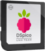
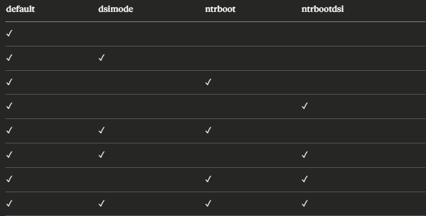

DSPico by LNH Team!As of now I have stopped uploaded my DSPico files on archive.org and have started using my own site here and mediafire.
Find the links below to the different firmwares and the guide to chose the correct firmware for your use case, as well as the SD Card files.
I've included some handy links below:
DSPico_B.Y.O
DSpico_B.Y.O (Build your Own) and is a legal, publicly shareable, DSpico firmware that you can distribute and flash on your DSPico. All you need to run the dspico with this firmware is at least default.nds by following the build instructions on the LNH github.
DSpico_B.Y.O: Download
To use DSpico_B.Y.O.uf2, please follow these instuctions and do not skip a step when flashing:
- Download this flash nuke.uf2
- Plug usb in to DSpico without sd card inserted.
- Drag and drop flash_nuke.uf2 onto the `RPI-RP2` drive that appears
- Disconnect usb cable from DSpico
- Connect MicroSD Card to Computer
- Make sure you have the `default.nds` rom and any of the optional roms are on the root of the mSD Card.
- Disconnect MicroSD Card from computer and plug it into your DSpico
- Plug usb into DSPico
- Drag and drop DSpico_B.Y.O.uf2 onto the `RPI-RP2` Drive
- Wait while the DSpico led flashes.
- When the led is solid* blue** disconnect the DSpico from the USB and enjoy.
- * If your DSpico led flashes but doesn't have a solid led color after flashing:
Disconnect, make sure you have the default.nds on the root of your microSD card and start again from step 2. - ** Led color may be different between DSpico suppliers.
You may use any combinations of the roms in this chart and the table below, shows you their original names and notes on what is needed to make them work:

| Rom Name | Original Rom Name | Notes |
|---|---|---|
| REQUIRED | ||
| default.nds | BOOTLOADER.NDS | Renamed and Encrypted with DSRomEncryptor per the Bootloader Compiling Instuctions from LNH-Team |
| OPTIONAL | ||
| dsimode.nds | WRFU Tester v0.60.srl | Rename Rom. SHA-1: 2d65fb7a0c62a4f08954b98c95f42b804fccfd26 |
| ntrboot.nds | Boot9strap_ntr.firm | Encrypted and ran through firm_to_nds.py |
| ntrbootdsi.nds | default.gcd | Renamed Rom |
Firmware
Firmware Changelog:
Firmware Files:
| Firmware | Build Ver | Comments |
|---|---|---|
| Firmware Guide | N/A | Use this guide to choose the recommended firmware for your situation. |
| DSpico_B.Y.O Edition | B.Y.O Edition v1.0.0 | Please follow the instuctions on the DSpico_B.Y.O tab to use this firmware :) |
| Hybrid Firmware | Ver 1.3.0 | Commit Tags; BL:`29671d0` FW:`177dd8d` SHA1: 9a5d090da58e7320c58d0ce73a6c800206203bd3 Repostirory can be found here |
| Wrfuxxed Firmware | Ver 1.3.0 | Commit Tags; BL:`29671d0` FW:`177dd8d` SHA1: fdfbfa7076185c50d0d97a9acf8e9187adb6ba32 Repostirory can be found here |
| Previous Builds | N/A | Now added - Meta information is still available at archive.org |
SD Card Files
I have built the latest version of the sdcard files, this includes the DSPico Loader and the DSPico Launcher; This latest release has officially merged the cheats functionality into the main files. As such the previous cheats build and FW Files build have now been archived and I now only have the one release again. To use cheats please follow the official documentation here.
Release 1.4.0 adds In Game Reset and Soft Rest to menu functionality. To use these features please check the chagelog below:
SD Files Changelog:
| SD Card Files | Link | Comments |
|---|---|---|
| Main Branch SD Files | SD Card Files | Recommended. Build Ver 1.4.1 |
| Old Builds | SD Archive | Contains old archived versions. Old cheats ver commit info Commit Tags; Loader:`bac98b4` Launcher: `b7d7f9f`. |
| DSi Emunand Files | DSi Nand | Extracted DSi Nand files for the DSPico DSi Emunand. Included in main build by default. |
FAQ's and Troubleshooting
So you're having trouble with your DSPcio, here are some quick troubleshooting steps you can try to fix the issues you are having
| Issue | Solution |
|---|---|
| I'm getting a red or blue screen | Make sure you have PicoLoader7.bin and PicoLoader9.bin in the `_pico` folder on your MicroSD Card |
| I'm getting a white screen when I try to load a rom |
|
| I have a DS Lite and im stuck on a white screen when loading | Disable Flashme by holding select or remove it |
| I have a DSi or 3ds and it's not showing on the menu | Make sure you have the WRFUXXED firmware if your console is unmodified |
| I use a mac and my dspico isn't loading properly | The dreaded mac files strike again do the following: 1) Enter this command in your terminal: `dot_clean -mv /Volumes/YOUR_SD_CARD_NAME`. 2) Folow this guide. |
| I want to change the DSPico cart logo/title on my ds | If you are using the WRFUXXED firmware, this is not possible as doing so would change the signature of the rom required for the exploit to work. If you are using the hybrid firmware it should be possible by editing the pico-launcher respostiory makefile |
| I ordered my dspico from Phenommod or aliexpress and it won't read in my 3ds | This is caused by the shell being a fraction of a millimeter too small (.4mm). Either order a replacement shell from phenommod if you ordered from there or apply a thin piece of tape to the both sides of the shell. This does not affect shell with the pin rails as it bends the pins into place and this is not ideal. |
| How do I emulate other consoles such as GBA with the DSPico? | u/Arnas_Z has written a guide on how to set the DSPico up to emulate other consoles, you can find it here. |
Resources/References/Credits
- LNH-Team
- PhenomMod